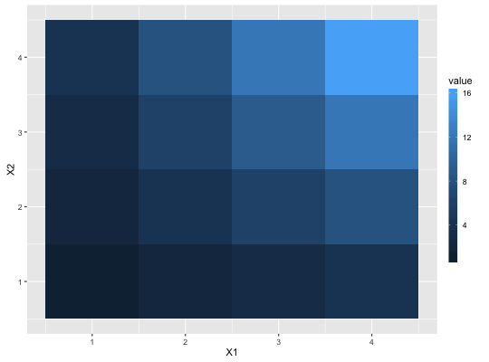
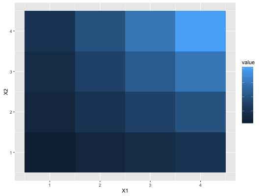
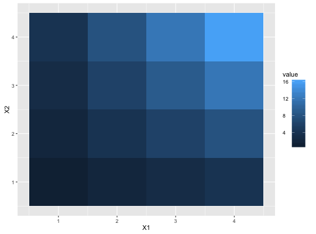
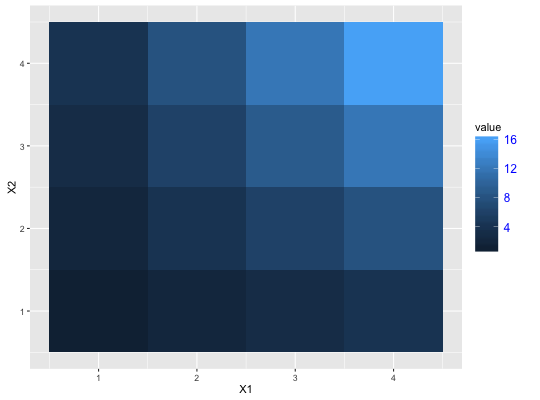
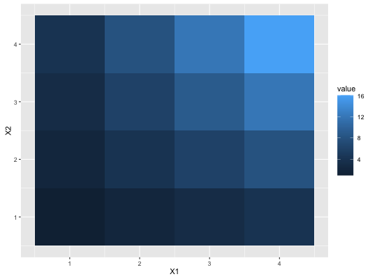
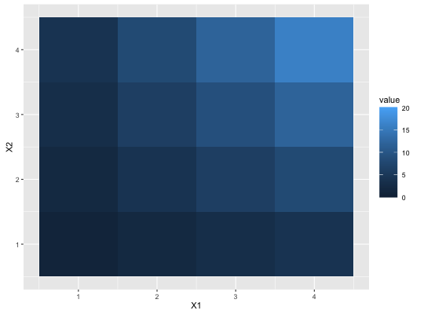
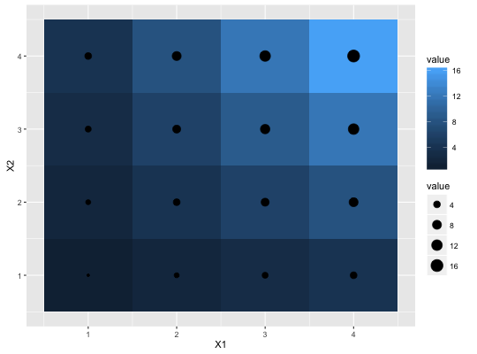
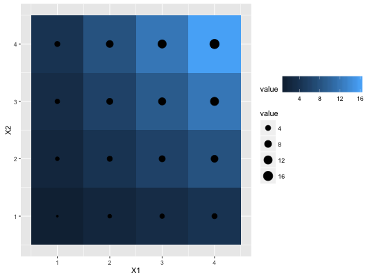

Continuous colour bar guide.
Usage
guide_colourbar(title = waiver(), title.position = NULL, title.theme = NULL, title.hjust = NULL, title.vjust = NULL, label = TRUE, label.position = NULL, label.theme = NULL, label.hjust = NULL, label.vjust = NULL, barwidth = NULL, barheight = NULL, nbin = 20, raster = TRUE, ticks = TRUE, draw.ulim = TRUE, draw.llim = TRUE, direction = NULL, default.unit = "line", reverse = FALSE, order = 0, ...)guide_colorbar(title = waiver(), title.position = NULL, title.theme = NULL, title.hjust = NULL, title.vjust = NULL, label = TRUE, label.position = NULL, label.theme = NULL, label.hjust = NULL, label.vjust = NULL, barwidth = NULL, barheight = NULL, nbin = 20, raster = TRUE, ticks = TRUE, draw.ulim = TRUE, draw.llim = TRUE, direction = NULL, default.unit = "line", reverse = FALSE, order = 0, ...)
Arguments
- title
- A character string or expression indicating a title of guide.
If
NULL, the title is not shown. By default (waiver), the name of the scale object or the name specified inlabsis used for the title. - title.position
- A character string indicating the position of a title. One of "top" (default for a vertical guide), "bottom", "left" (default for a horizontal guide), or "right."
- title.theme
- A theme object for rendering the title text. Usually the
object of
element_textis expected. By default, the theme is specified bylegend.titleinthemeor theme. - title.hjust
- A number specifying horizontal justification of the title text.
- title.vjust
- A number specifying vertical justification of the title text.
- label
- logical. If
TRUEthen the labels are drawn. IfFALSEthen the labels are invisible. - label.position
- A character string indicating the position of a label. One of "top", "bottom" (default for horizontal guide), "left", or "right" (default for vertical guide).
- label.theme
- A theme object for rendering the label text. Usually the
object of
element_textis expected. By default, the theme is specified bylegend.textinthemeor theme. - label.hjust
- A numeric specifying horizontal justification of the label text.
- label.vjust
- A numeric specifying vertical justification of the label text.
- barwidth
- A numeric or a
unitobject specifying the width of the colorbar. Default value islegend.key.widthorlegend.key.sizeinthemeor theme. - barheight
- A numeric or a
unitobject specifying the height of the colorbar. Default value islegend.key.heightorlegend.key.sizeinthemeor theme. - nbin
- A numeric specifying the number of bins for drawing colorbar. A smoother colorbar for a larger value.
- raster
- A logical. If
TRUEthen the colorbar is rendered as a raster object. IfFALSEthen the colorbar is rendered as a set of rectangles. Note that not all graphics devices are capable of rendering raster image. - ticks
- A logical specifying if tick marks on colorbar should be visible.
- draw.ulim
- A logical specifying if the upper limit tick marks should be visible.
- draw.llim
- A logical specifying if the lower limit tick marks should be visible.
- direction
- A character string indicating the direction of the guide. One of "horizontal" or "vertical."
- default.unit
- A character string indicating
unitforbarwidthandbarheight. - reverse
- logical. If
TRUEthe colorbar is reversed. By default, the highest value is on the top and the lowest value is on the bottom - order
- positive integer less that 99 that specifies the order of this guide among multiple guides. This controls the order in which multiple guides are displayed, not the contents of the guide itself. If 0 (default), the order is determined by a secret algorithm.
- ...
- ignored.
Value
-
A guide object
Description
Colour bar guide shows continuous color scales mapped onto values.
Colour bar is available with scale_fill and scale_colour.
For more information, see the inspiration for this function:
Matlab's colorbar function.
Details
Guides can be specified in each scale_* or in guides.
guide="legend" in scale_* is syntactic sugar for
guide=guide_legend() (e.g. scale_color_manual(guide = "legend")).
As for how to specify the guide for each scale in more detail,
see guides.
Examples
df <- reshape2::melt(outer(1:4, 1:4), varnames = c("X1", "X2")) p1 <- ggplot(df, aes(X1, X2)) + geom_tile(aes(fill = value)) p2 <- p1 + geom_point(aes(size = value)) # Basic form p1 + scale_fill_continuous(guide = "colorbar")
p1 + scale_fill_continuous(guide = guide_colorbar())p1 + guides(fill = guide_colorbar())# Control styles # bar size p1 + guides(fill = guide_colorbar(barwidth = 0.5, barheight = 10))
# no label p1 + guides(fill = guide_colorbar(label = FALSE))
# no tick marks p1 + guides(fill = guide_colorbar(ticks = FALSE))# label position p1 + guides(fill = guide_colorbar(label.position = "left"))
# label theme p1 + guides(fill = guide_colorbar(label.theme = element_text(colour = "blue", angle = 0)))
# small number of bins p1 + guides(fill = guide_colorbar(nbin = 3))# large number of bins p1 + guides(fill = guide_colorbar(nbin = 100))
# make top- and bottom-most ticks invisible p1 + scale_fill_continuous(limits = c(0,20), breaks=c(0, 5, 10, 15, 20), guide = guide_colorbar(nbin=100, draw.ulim = FALSE, draw.llim = FALSE))
# guides can be controlled independently p2 + scale_fill_continuous(guide = "colorbar") + scale_size(guide = "legend")
p2 + guides(fill = "colorbar", size = "legend")p2 + scale_fill_continuous(guide = guide_colorbar(direction = "horizontal")) + scale_size(guide = guide_legend(direction = "vertical"))